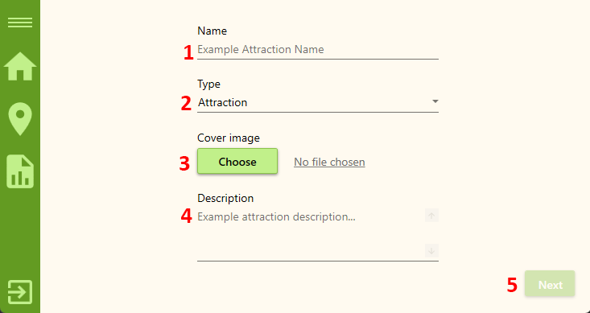

Add atractions
This is the first of two pages for adding/editing attraction that the agent sees after clicking the 'Add Attraction' ('Edit Attraction') button on their home page. The 'Add Attraction Basic Info' page has the following layout:

- Input Field For Attraction's Name
- Dropdown Menu For Attraction's Type
- Button For Selecting Attraction's Cover Image From Your Computer
- Input Field For Attraction's Description
- Button For Next Step In Proccess Of Creating Journey
Attraction's name
When creating an attraction, it is important to provide an accurate and descriptive name that effectively represents the unique features and characteristics of the location or point of interest. The attraction's name serves as a way to identify and showcase the attraction to potential visitors. Here are some guidelines to follow when entering the attraction's name:
- Character Limit: The attraction's name should be between 2 and 30 characters in length. This allows for a concise yet meaningful description of the attraction.
- Descriptive and Informative: The attraction's name should provide a clear and concise representation of the location or point of interest. It should capture the essence of the attraction and give potential visitors an idea of what to expect.
Attractions's Type
When specifying the type of an attraction, it is essential to accurately categorize the attraction based on its purpose or nature. The type helps visitors identify and filter attractions based on their specific interests or needs. In the Create Attraction window, you will find a dropdown menu with three options: Attraction, Restaurant, and Accommodation. Here's a brief overview of each type:
-
Attraction:
Select this option if the place you are creating is a tourist attraction, landmark, point of interest, or any other place that is primarily visited for its unique features, historical significance, natural beauty, or cultural importance. This category typically includes museums, parks, monuments, historical sites, and other similar attractions.
-
Restaurant:
Choose this option if the place you are adding is a restaurant, café, bistro, or any other dining establishment. This category is suitable for places that primarily serve food and beverages. Visitors often seek out restaurants to enjoy a meal, experience local cuisine, or socialize in a dining setting.
-
Accommodation:
Use this option if the place you are creating is an accommodation facility, such as a hotel, motel, bed and breakfast, guesthouse, or vacation rental. This category is appropriate for places that offer lodging services to travelers, providing them with a place to stay overnight during their journey
Attraction's Cover Image
In the Create Attraction window, you have the option to select a cover image for the Attraction. This allows you to visually represent the attraction and make it more appealing to travelers. To select a cover image, follow these steps:
- Click on the "Choose Picture" button: On the Create Attraction window, you will find a button labeled "Choose Picture." Clicking on this button will open a file dialog, allowing you to browse and select an image file from your device.
- Select the desired image: In the file dialog, navigate to the location where your images are stored. Choose the image file that you want to use as the cover image for the journey and click the "Open" button.
- Image submission: After selecting the image, it will be submitted as the cover image for the attraction. Once submitted, the name of the uploaded image will appear as a hyperlink on the right side of the "Choose Picture" button.
- Viewing the image: To view the cover image, simply click on the hyperlink displaying the name of the uploaded image. This action will open a modal window that displays the selected image, allowing you to preview it.
Attraction's Description
The description of an attraction plays a crucial role in providing visitors with a concise yet informative overview of what they can expect when visiting the place. In the Create Attraction window, you will find a field where you can enter a brief description of the attraction. Here are some guidelines to help you craft an effective description:
- Be Informative: Use the limited space available (between 10 and 250 characters) to provide key details about the attraction. Highlight its unique features, historical significance, cultural relevance, or any other aspect that sets it apart from other attractions.
- Be Engaging: Aim to capture the interest and curiosity of potential visitors with your description. Use enticing language and descriptive words to create a sense of excitement or intrigue about the attraction.
Proceed to next page
In the Create Attraction window, you will find a "Next" button that allows you to proceed to the next step in creating a attraction. The "Next" button is an important control that helps ensure all required information is filled in correctly before advancing.